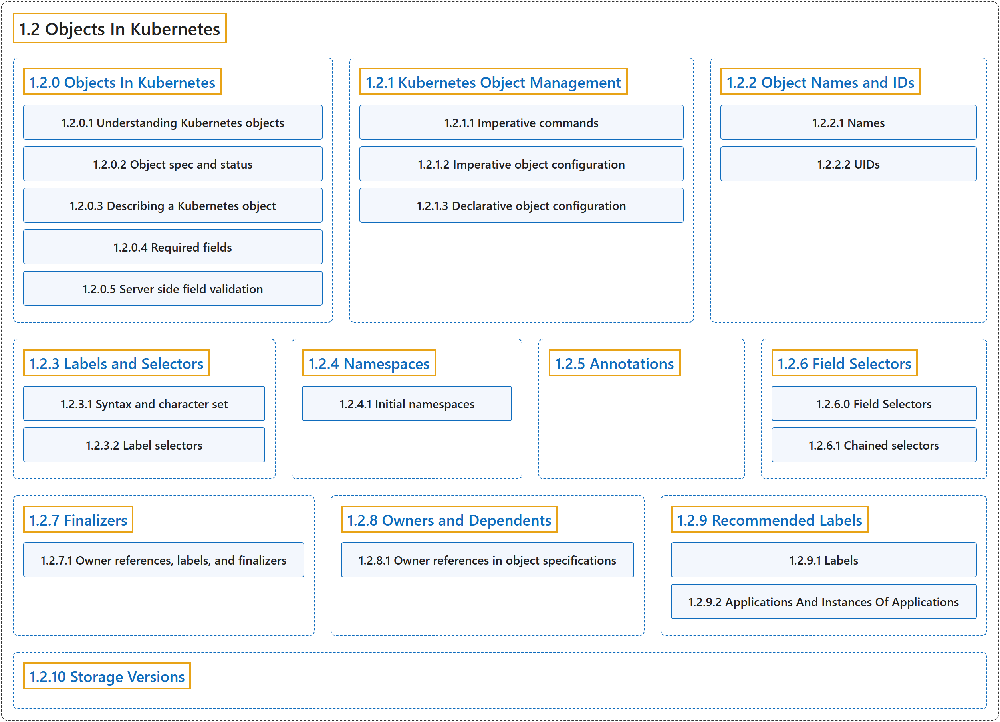

1.2 Objects In Kubernetes
Classification

Glossary
| Term | Definition | 中文翻译 | Source |
|---|---|---|---|
| 1.2 Objects In Kubernetes Kubernetes 中的对象 |
"Kubernetes objects are persistent entities in the Kubernetes system." | Kubernetes 对象是 Kubernetes 系统中的持久化实体。 | The Kubernetes Authors, n.d.-h, "Objects In Kubernetes", para. 1 |
| 1.2.0 Objects In Kubernetes Kubernetes 中的对象 |
"Kubernetes objects are persistent entities in the Kubernetes system." | Kubernetes 对象是 Kubernetes 系统中的持久化实体。 | The Kubernetes Authors, n.d.-h, "Objects In Kubernetes", para. 1 |
| 1.2.1 Kubernetes Object Management Kubernetes 对象管理 |
(context) "The kubectl command-line tool supports several different ways to create and manage Kubernetes objects." |
（语境）kubectl 命令行工具支持多种不同方式来创建和管理 Kubernetes 对象。 |
The Kubernetes Authors, n.d.-d, "Kubernetes Object Management", para. 1 |
| 1.2.2 Object Names and IDs 对象名称与 ID |
(context) "Each object in your cluster has a Name that is unique for that type of resource." | （语境）集群中的每个对象都有一个名称，它在该类资源中是唯一的。 | The Kubernetes Authors, n.d.-g, "Object Names and IDs", para. 1 |
| 1.2.3 Labels and Selectors 标签与选择算符 |
"Labels are key/value pairs that are attached to objects such as Pods." | 标签是键值对，附加在 Pod 等对象上。 | The Kubernetes Authors, n.d.-e, "Labels and Selectors", para. 1 |
| 1.2.4 Namespaces 命名空间 |
"In Kubernetes, namespaces provide a mechanism for isolating groups of resources within a single cluster." | 在 Kubernetes 中，命名空间提供一种机制，用于在单个集群中隔离资源组。 | The Kubernetes Authors, n.d.-f, "Namespaces", para. 1 |
| 1.2.5 Annotations 注解 |
"You can use Kubernetes annotations to attach arbitrary non-identifying metadata to objects." | 你可以使用 Kubernetes 注解来附加任意的非标识性元数据到对象上。 | The Kubernetes Authors, n.d.-a, "Annotations", para. 1 |
| 1.2.6 Field Selectors 字段选择器 |
"Field selectors let you select Kubernetes objects based on the value of one or more resource fields." | 字段选择器让你选择 Kubernetes 对象，依据是一个或多个资源字段的值。 | The Kubernetes Authors, n.d.-b, "Field Selectors", para. 1 |
| 1.2.7 Finalizers Finalizer |
"Finalizers are namespaced keys that tell Kubernetes to wait until specific conditions are met before it fully deletes resources that are marked for deletion." | Finalizer 是带命名空间的键，告诉 Kubernetes 等待特定条件满足，然后才彻底删除被标记为删除的资源。 | The Kubernetes Authors, n.d.-c, "Finalizers", para. 1 |
| 1.2.8 Owners and Dependents 属主与附属 |
"In Kubernetes, some objects are owners of other objects." | 在 Kubernetes 中，有些对象是其他对象的属主。 | The Kubernetes Authors, n.d.-i, "Owners and Dependents", para. 1 |
| 1.2.9 Recommended Labels 推荐使用的标签 |
(context) "A common set of labels allows tools to work interoperably, describing objects in a common manner that all tools can understand." | （语境）一组通用标签让工具可以互操作，以通用方式描述对象，所有工具都能理解这种方式。 | The Kubernetes Authors, n.d.-j, "Recommended Labels", para. 1 |
| 1.2.10 Storage Versions 存储版本 |
"Kubernetes uses the term storage version to describe how an object is stored in your cluster." | Kubernetes 用存储版本这个术语来描述对象在集群中的存储方式。 | The Kubernetes Authors, n.d.-k, "Storage Versions", para. 1 |
References
The Kubernetes Authors. (n.d.-a). Annotations. Kubernetes Documentation. Retrieved October 31, 2026, from https://kubernetes.io/docs/concepts/overview/working-with-objects/annotations/
The Kubernetes Authors. (n.d.-b). Field Selectors. Kubernetes Documentation. Retrieved October 31, 2026, from https://kubernetes.io/docs/concepts/overview/working-with-objects/field-selectors/
The Kubernetes Authors. (n.d.-c). Finalizers. Kubernetes Documentation. Retrieved October 31, 2026, from https://kubernetes.io/docs/concepts/overview/working-with-objects/finalizers/
The Kubernetes Authors. (n.d.-d). Kubernetes Object Management. Kubernetes Documentation. Retrieved October 31, 2026, from https://kubernetes.io/docs/concepts/overview/working-with-objects/object-management/
The Kubernetes Authors. (n.d.-e). Labels and Selectors. Kubernetes Documentation. Retrieved October 31, 2026, from https://kubernetes.io/docs/concepts/overview/working-with-objects/labels/
The Kubernetes Authors. (n.d.-f). Namespaces. Kubernetes Documentation. Retrieved October 31, 2026, from https://kubernetes.io/docs/concepts/overview/working-with-objects/namespaces/
The Kubernetes Authors. (n.d.-g). Object Names and IDs. Kubernetes Documentation. Retrieved October 31, 2026, from https://kubernetes.io/docs/concepts/overview/working-with-objects/names/
The Kubernetes Authors. (n.d.-h). Objects In Kubernetes. Kubernetes Documentation. Retrieved October 31, 2026, from https://kubernetes.io/docs/concepts/overview/working-with-objects/
The Kubernetes Authors. (n.d.-i). Owners and Dependents. Kubernetes Documentation. Retrieved October 31, 2026, from https://kubernetes.io/docs/concepts/overview/working-with-objects/owners-dependents/
The Kubernetes Authors. (n.d.-j). Recommended Labels. Kubernetes Documentation. Retrieved October 31, 2026, from https://kubernetes.io/docs/concepts/overview/working-with-objects/common-labels/
The Kubernetes Authors. (n.d.-k). Storage Versions. Kubernetes Documentation. Retrieved October 31, 2026, from https://kubernetes.io/docs/concepts/overview/working-with-objects/storage-version/